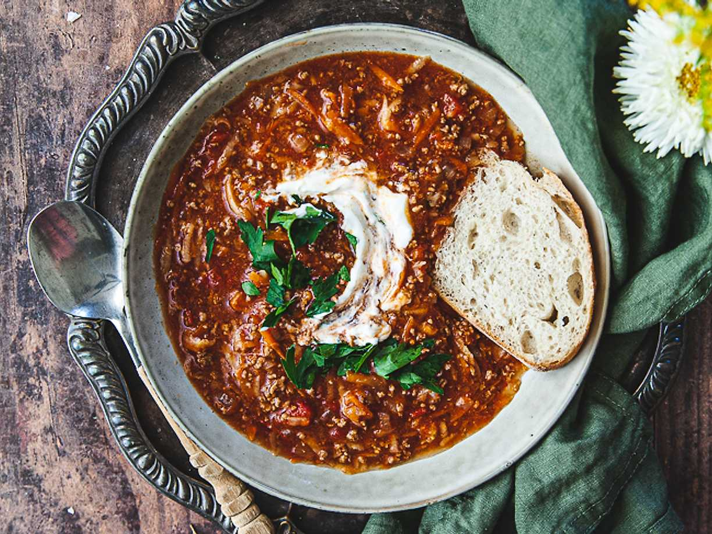

Minced Meat Soup

Description
This recipe is both filling and tasty! It goes well with some bread to dip into the soup.
It's perfect for a cold day, to stay cozy and warm while looking out on the beautiful snowy dark night.
Ingredients
- 700 g ground beef
- 1 onion
- 4 cloves of garlic
- 2 carrots
- 1 parsnip
- 1 can of salsa
- 3 Tbsp ox broth
- 7 dl water
- 2 bay leafs
- 800 g crushed tomatos
- 0,5 dl balsamvineger
- salt
- pepper
Steps
- Peel and mince the onion and garlic. Brown them togheter with the ground beef in a pot.
- Peel and grate the carrots and parsnips.
- Mix the rootcrops into the pot togheter with the salsa, broth, water, bayleefs and the crushed tomatoes. Let it simmer for about 10 minutes.
- Use more water if the soup is to thick.
- Taste the soup and add an adduqate amount of balsamvineger, salt and pepper.
- Viola! You can add some créme fraíche if you want, and the soup is definatly better with bread to dip with!